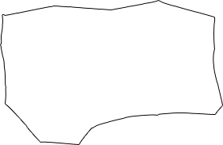
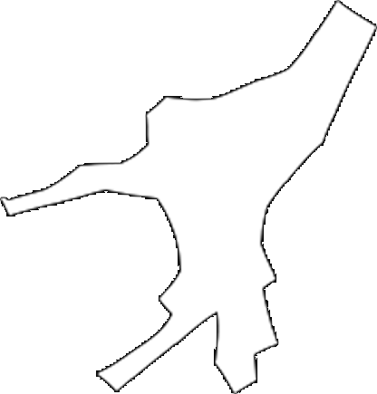
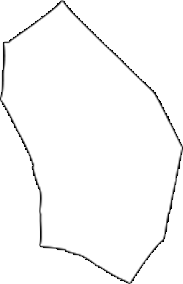
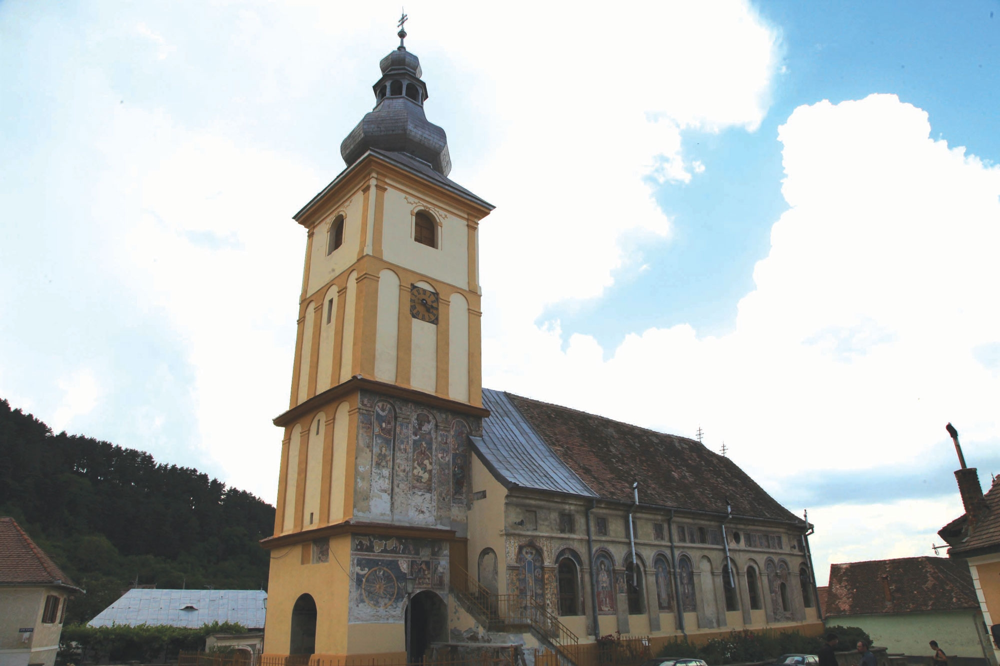

COMUNA
Cu o densitate de 43,26 loc./km² și, conform recensământului din 2011, 5.416 de locuitori, comuna Rășinari este împărțită în trei sate:
|

TRĂINEI
|

RĂŞINARI
|

PRISLOP
|
Majoritatea locuitorilor sunt români (90,88%), cu o minoritate de romi (5,95%). Pentru 2,92% din populație, apartenența etnică nu este cunoscută.
Din punct de vedere confesional, majoritatea locuitorilor sunt ortodocși (93,41%), cu o minoritate de penticostali (2,38%).
Pentru 3,1% din populație, nu este cunoscută apartenența confesională.
Primarul actual este Bucur Bogdan, de la Partidul Național Liberal.
Satul cel mai populat este cel care poartă numele comunei, Rășinari, numărând 5.086 de locuitori, în timp ce Prislop are 330 de locuitori.
Coordonatele geografice sunt: 45°40′12″N 24°01′35″E.
Codul poştal este 557200.
EXPLOREAZĂ
 |
Răşinariul se poate mândri cu faptul că este singura comună din România cu tramvai.
Activând din 1948 în zona micii comune, în 2011 tramvaiul a fost "demis" din transportul
public local, circulând doar la zile mari, în scop turistic sau artistic.
Linia de tramvai Sibiu-Rășinari a fost singura care a supraviețuit dezafectărilor
de linii de tramvai din orașul Sibiu din perioada anilor 1966-1972.
|
|
Una dintre cele mai cunoscute monumente istorice ale Răşinariului este Biserica Cuvioasa Paraschiva, situată la centrul vechi al satului omonim, construită în stil baroc între anii 1725 şi 1758.
|

|
|
Un alt punct de interes al comunei îl reprezintă casa natală a poetului Octavian Goga. Prim-ministru al României între anii 1937 şi 1938 şi membru al Academiei Române începând cu anul 1920,
a fost autorul creaţiei literare Meşterul Manole, lansată în anul 1924.
|
|
CAZEAZĂ-TE
Primele 5 dintre cele mai apreciate pensiuni din Rășinari, conform booking.com: